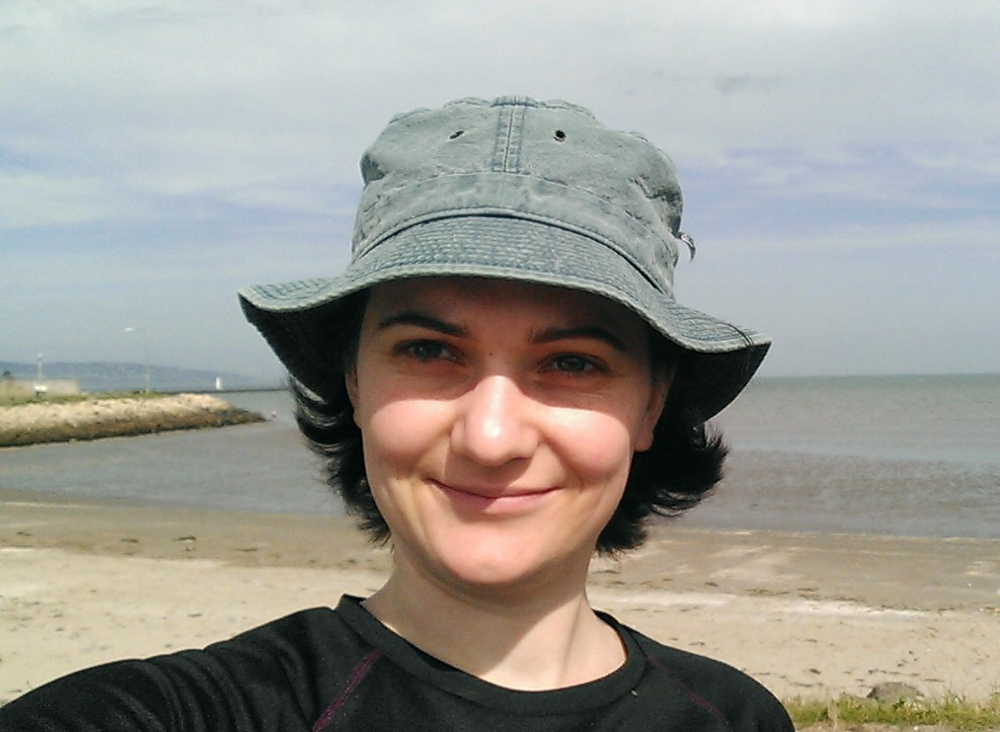

Laurie Lugrin
R&D engineer working in NLP for marketing.
Looking for my next data science job.
laurie.lugrin@gmail.com
+44 77 60 588 345
London, UK
cv (pdf)
Skills
Data Science
Natural Language Processing (NLP)
- entity linking, word embeddings, ontologies, user modelling
- also interested in: information retrieval
Python: nltk, gensim, textblob
Machine Learning
- stats, general supervised and unsupervised learning, recommender systems, Bayesian programming
- also interested in: times series, reinforcement learning, neural networks
Python: numpy, pandas, sklearn, pyMC3
weka
Data viz
Python: matplotlib, bokeh for interactive visualisation
Data engineering
mySQL, neo4j graph database, mongoDB
Python: luigi for automating data pipelines
Programming and Computer Science
- algorithms and data structures, formal verification
C++: STL, boost, gtests
Bash, jq, ack-grep
Python, Scala (Spark), Octave/Matlab
Markdown, LaTeX
IntelliJ, Eclipse, Sublime Text 3
Linux, git, github, jupyter notebooks, conda
Business
- curious and happy to learn about the business
Work methodology
Languages
- French: mother tongue.
- English: experienced, lived in Canada for 3 months, in Ireland for 3 years, now living in the UK for the last 3 years.
(CEFR B2 in 2008,
IELTS 7.5/9 in 2011).
- German: academic knowledge, lived in Germany for 5 weeks.
Professional experience
January 2015 - now:
R&D NLP engineer at idio, London, UK
idio helps brands have a data-driven marketing strategy. We analyse online content and customer journeys through the website to serve relevant content that will maximise engagement and conversion.
As part of the research team, I worked on the core semantic text analysis.
NERD engine
- Developed a state-of-the-art named-entity recognition and disambiguation software, beating dbpedia-spotlight, zemanta and Alchemy in terms of F1-score on academic datasets.
- Built various tools to evaluate and debug our NLP engine:
- an evaluation tool used with large data sets for model selection and tuning;
- a non-regression tool with detailled feedback for manual attention;
- a tool that creates test sets covering specific clients' needs;
- a grid-search-inspired hyper-parameter optimisation tool with visual output to provide insights on the role of each parameter.
Ontology
- Built an ontology incorporating different data sources. It is regularly updated with new topics imported from open-source knowledge bases. This allows us to pick up the latest topics about new technologies and current affairs.
- Implemented a sanity check tool for our ontology, identifying anomalies such as isolated entities and duplicated entities, so that we are more confident in releasing massive updates.
Pipeline automation
- Maintained and improved our pipeline automation tool. We can rebuild any intermediate or production data set in one command line.
Communication
- Presented the work done to non-technological teams during Agile sprint reviews.
January 2012 - December 2013:
Risk software engineer at RenaissanceRe, Dublin, Ireland
RenaissanceRe is a re-insurance company with a large volume of contracts signed daily. As part of the backend team, I made sure the analysts had the best tools to understand and quote their deals.
Rewrote the compensation software
This software uses Monte-Carlo methods to determine the amount of money the client is entitled to claim, given the damage sustained and the contract terms.
-
gathered requirements from the business analyst, raising issues when the legacy software behaved inconsistently.
-
improved speed, maintainability and extensibility.
-
cooperated with the front-end team and users.
-
data modelling and migration: Designed a data format for contract terms that is intuitive and has a straightforward implementation to replace the legacy non-documented data format and the corresponding cryptic processing logic. Proved the equivalence of the two representations. Wrote a migration tool to transform the legacy files.
-
support and maintenance: interactions with business analysts and underwriters.
Built a human-error simulation software
This software predicts the damage that clients would undergo in different scenarios,
such as natural catastrophes or human errors.
-
requirement analysis with analysts, implementation, optimisation.
C++, Python (pandas), Eclipse, PyCharm, Mercurial
June - August 2011:
Software engineer at Moody's analytics, Montbonnot, France
Developed a rule-based system that determines the safety-net threshold for bank loans according to regulations.
C++, PL/SQL, Visual studio, Perforce, Agile development (SCRUM)
Oct 2009 - Dec 2010: Research assistant and part-time teacher,
Verimag Lab and Joseph Fourier University, Grenoble, France
Designed a method for comparing energy consumption models of wireless sensor networks. Performed a case-study using the data sheet of the embedded radio device CC1100 to confirm the performance and capabilities of my implementation.
Gave many presentations of my work in English as well as in French.
Python, C, Unix shell, Latex, Emacs, Git
Taught 90 hours of tutorials and practical labs:
C programming, algorithms, formal languages, automata theory.
2008 - 2009 (~60h):
Computer Science tutor at Joseph Fourier University, Grenoble, France
Taught 1st and 2nd-year university students in groups and individually, alongside my studies.
May - Sept 2008:
Research intern at the University of Toronto, Canada
Studied temporal logics and model-checking theory prior to the internship.
Contributed to a software model-checker, that builds an simplified symbolic model of the software and proves properties expressed in mu-calculus.
My team proposed an alternative semantics for mu-calculus,
which is more precise than the standard semantics,
i.e. it can prove properties true or false in more cases;
and it allows symbolic models to be smaller.
I implemented the new semantics in the model-checker
and conducted experiments to assess the benefits.
Java, Python, Emacs, SVN
Summer 2006:
Intern at Grenoble Informatics Laboratory, Grenoble, France
Contributed to an intelligent tutoring system for medical surgeons.
Modelled in UML. Implemented a database. Designed a website.
SQL, UML, XHTML, CSS2
Projects
Aug 2013
Took part in a contest
organised by brilliant.org where participants had to write bots
that fight and/or cooperate to survive in a game theory setting,
similar to an
iterated prisoner's dilemma.
My bot was one of the 45 survivors amongst the 440 participants.
Python, Pycharm, Git
Oct 2010 - Feb 2011
Designed a hardware-based frogger game.
Conducted a requirement analysis, wrote a prototype, implemented on FPGA.
C, SDL graphics/sound, VHDL, Git
Late 2008
Developed an IRC bot which makes rhymes and funny
remarks interacting with the discussion.
It was occasionally mistaken for a human.
Python, Bazaar, IRC protocol
Feb 2008
Designed and implemented a compiler for a functional language with process parallelism.
Java, C
May - June 2007
Designed and implemented a clone of the puzzle game Blokus,
including an AI with configurable strengths.
Summer 2007
Developed a snake game.
Python, Pygame, Emacs, Bazaar
2006
Wrote a tool that suggests ways to transpose a guitar song, making it easier to play.
C, Emacs
Education
2014
Data Analysis and Statistical Inference,
Duke University
on coursera (certificate)
Machine Learning,
Stanford University
on coursera (certificate)
R programming,
Johns Hopkins University
on coursera (certificate)
Game Theory,
Stanford University and The University of British Columbia
on coursera (certificate)
Zero-sum games, prisoners dilemma, repeated games, Bayesian games, coalitional games.
2009
M.Sc.
on Computer Science,
minor on Artificial Intelligence and Web,
with high honours
Joseph Fourier University, Grenoble, France.
Coursework included Machine Learning, Information Retrieval, Knowledge Representation and Inference, Semantic Web, Operations Research.
Magistère on Computer Science,
with high honours
Magistère is an excellence course offered to the top 10% students with emphasis on research.
Joseph Fourier University, Grenoble, France.
2007
B.Sc.
on Computer Science,
with high honors
Joseph Fourier University, Grenoble, France.
Hobbies
Sports:
Music, playing the guitar.